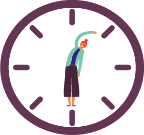
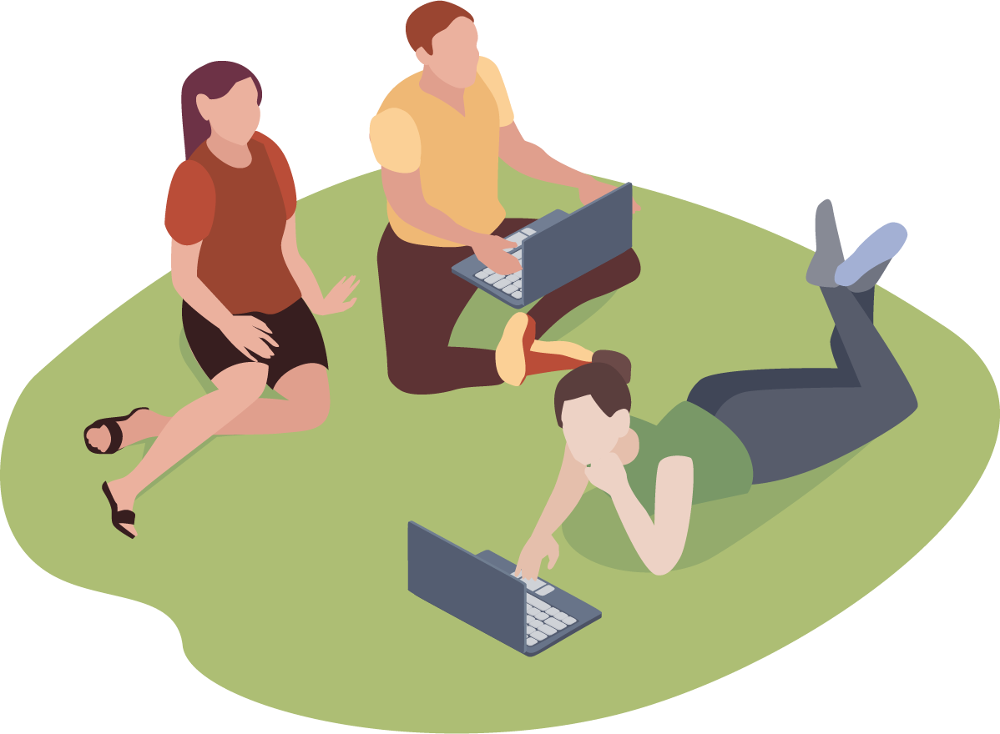
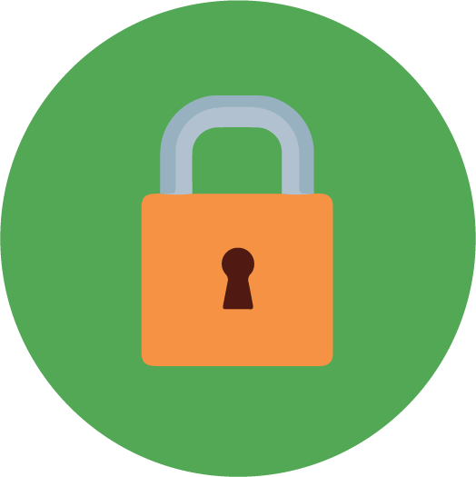

Atendimento Online
A sessão online não é diferente da sessão presencial, porque esse tipo de experiência é muito semelhante àquela vivenciada em consultórios, uma vez que permite o diálogo em tempo real, por meio da fala e contato visual.
duração de 50 minutos
realizado por meio de videoconferências
horários previamente agendados
O atendimento psicológico online é devidamente autorizado e regulamentado pelo Conselho Federal de Psicologia (CFP).
Desde 2018, com a Resolução CFP nº 011/18, o Conselho Federal de Psicologia — órgão que regulamenta, orienta e fiscaliza a profissão de psicólogo no Brasil — passou a autorizar consultas psicológicas online, que devem seguir o que prevê o código de ética da profissão, exatamente como as consultas presenciais. E para poder realizar os atendimentos, o psicólogo deve estar devidamente registrado no Conselho Regional de Psicologia, além de possuir cadastro no sistema
E-psi do CFP: Clique aqui para acessar
Acesso à Internet
Computador com webcam e microfone
(preferencial)
ou
Smartphone
com câmera frontal
Se todas estas condições estiverem reunidas, você se beneficiará de um atendimento psicológico eficaz e seguro.
Como são realizadas as sessões?
Plataforma
 Google Meet
Google MeetSem necessidade de criar nenhuma conta
Após agendamento prévio, você receberá um link da sessão com
Benefícios

Flexibilidade de horários
Comodidade

Praticidade

Total sigilo e privacidade